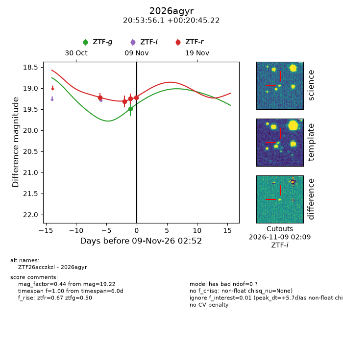
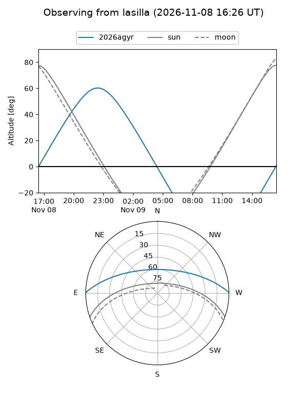
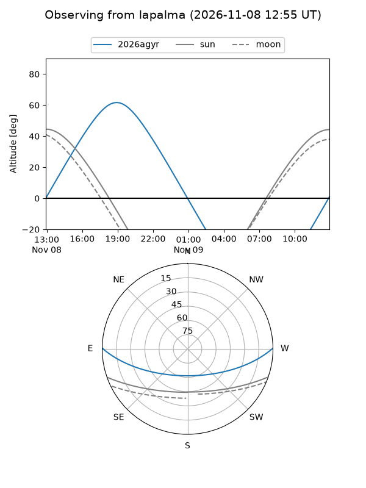
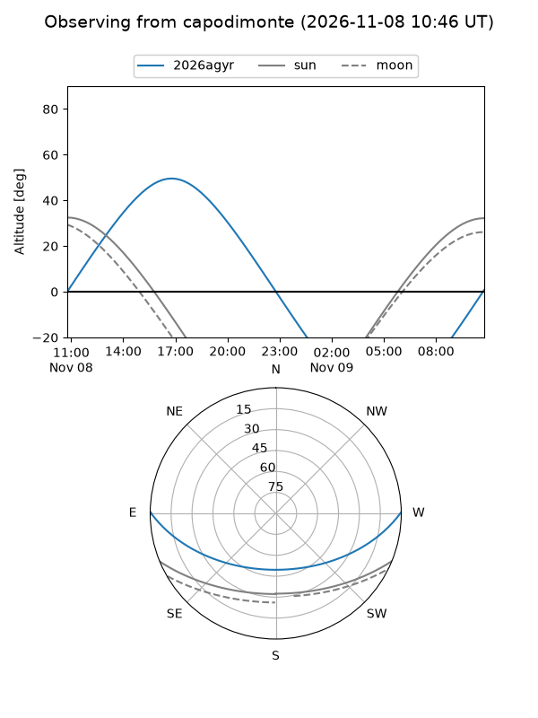
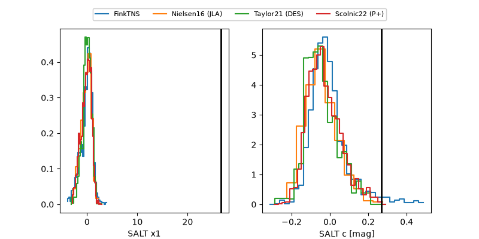

2026agyr
Target 2026agyr at 2026-11-09 02:54
Aliases and brokers:
FINK-ZTF: ztf.fink-portal.org/ZTF26acczkzl
Lasair-ZTF: lasair-ztf.lsst.ac.uk/objects/ZTF26acczkzl
ALeRCE-ZTF: alerce.online/object/ZTF26acczkzl
YSE-PZ: ziggy.ucolick.org/yse/transient_detail/2026agyr
TNS name: wis-tns.org/object/2026agyr
Direct TNS query: direct search
alt names
ZTF26acczkzl (ztf,fink_ztf)
2026agyr (tns,yse)
Coordinates:
equatorial (ra, dec) = 313.4837,+0.34589
equatorial (HMS+DMS) = 20:53:56.09,+00:20:45.22
galactic (l, b) = (48.3706,-26.78243)
Flags:
peak dt: +5.7
Photometry:
last ztfg=19.49, ztfr=19.22
1 ztfg, 4 ztfr detections
Lightcurve

Visibility



Additional plots
